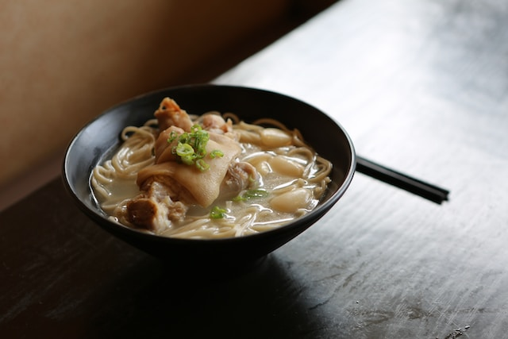

Home

Chciken Soup
Creamy broth, juicy little bits of chicken, pasta (I used small shells), swirls
of spinach and a sprinkling of sun dried tomato which I use instead of the usual
croutons. Easy, one pot, quick to make, and great for making ahead.
Ingredients
- 500 g/1 lb chicken thighs , skinless boneless
- 1/2 tsp each salt and pepper
- 30g / 2 tbsp unsalted butter
- 1 onion , finely chopped
- 2 garlic cloves , minced
- 2 large celery stems , finely sliced (sub 2 carrots)
- 1/2 cup chardonnay or other dry white wine, optional
- 4 cups chicken stock/broth , low sodium
- 3 cups water
- 1 tsp cooking/kosher salt
- 1/2 tsp black pepper
- 250g/8 oz small pasta shells (or other small pasta, rice, potato etc)
- 1 cup (tightly packed) parmesan, finely grated or store bought pre-grated (sandy type)
- 1 cup thickened/heavy cream
- 2 packed cups baby spinach , chopped kale or similar
- 1/2 cup sun dried tomato strips , chopped into 1cm pieces, plus bit of oil drizzling
Instructions:
- Cook outside of chicken – Sprinkle each side with the salt and pepper. Melt butter in a large pot over medium high heat. Once foamy, place the chicken in and cook the first side for 3 minutes or until light golden, then the other side for 2 minutes – it's fine if the inside is still raw, it cooks more later. Remove onto a plate.
- Soup flavour base – Turn the stove down to medium low. Add garlic, onion and celery into the same pot then cook for 3 minutes or until the onion is softened.
- Deglaze – Turn up to high, add wine, stir, then let it simmer until the wine reduces by half.
- Broth & pasta – Add stock/broth, water, salt and pepper. Bring to a boil then add the pasta. Cook for the time per the pasta packet directions (~10 minutes), stirring every now and then so the pasta doesn't stick to the base of the pot.
- Add chicken partway – While the pasta is cooking, chop the chicken into 1.5cm / 1/2" pieces then add into the pot to finish cooking.
- Finish soup – Once the pasta is cooked, turn heat down to low. Stir in parmesan until melted. Stir in the cornflour-water mixture, cream and spinach. Stir for a minute until spinach is wilted and soup thickens slightly.
- Serve – Ladle into bowls. Sprinkle with sun dried tomato strips (and a bit of oil looks nice for finishing).
- Storing – Separate pasta from soup so it doesn't bloat, refrigerate both. Just scoop out with slotted spoon.